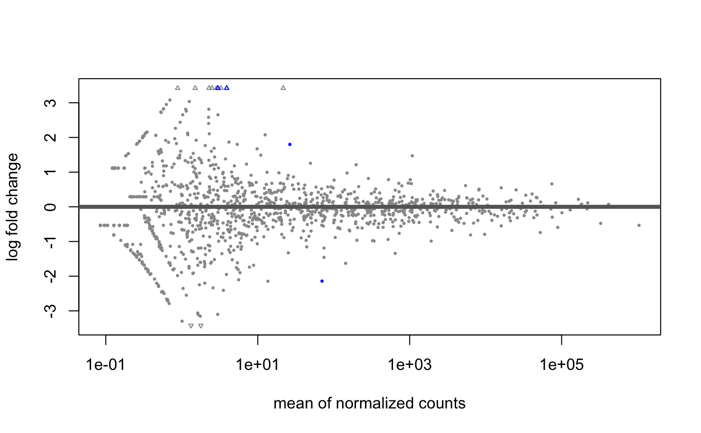
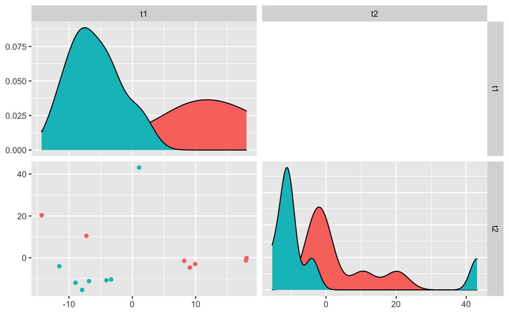
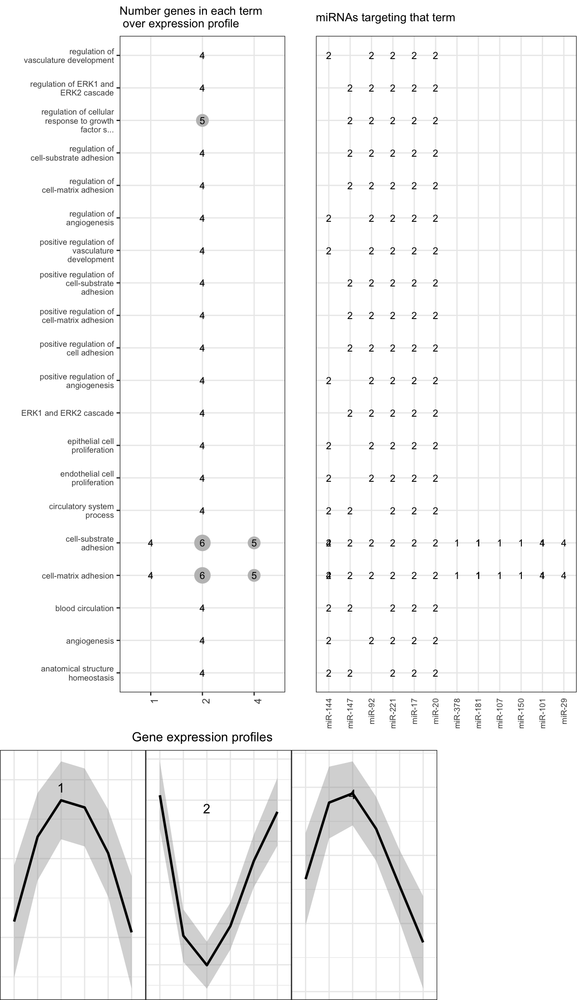

Characterization of miRNA and isomiR molecules
Lorena Pantano
22 March 2018
Abstract
isomiRs package version: 1.7.2
Lorena Pantano Harvard TH Chan School of Public Health, Boston, US
Introduction
miRNAs are small RNA fragments (18-23 nt long) that influence gene expression during development and cell stability. Morin et al (Morin et al. 2008), discovered isomiRs first time after sequencing human stem cells.
IsomiRs are miRNAs that vary slightly in sequence, which result from variations in the cleavage site during miRNA biogenesis (5’-trimming and 3’-trimming variants), nucleotide additions to the 3’-end of the mature miRNA (3’-addition variants) and nucleotide modifications (substitution variants)(Martí et al. 2010).
There are many tools designed for isomiR detection, however the majority are web application where user can not control the analysis. The two main command tools for isomiRs mapping are SeqBuster and sRNAbench (Guillermo et al. 2014). isomiRs. package is designed to analyze the output of SeqBuster tool or any other tool after converting to the desire format.
Input format
The input should be the output of SeqBuster-miraligner tool (*.mirna files). It is compatible with mirTOP tool as well, which parses BAM files with alignments against miRNA precursors.
For each sample the file should have the following format:
seq name freq mir start end mism add t5 t3
TGTAAACATCCTACACTCAGCT seq_100014_x23 23 hsa-miR-30b-5p 17 40 0 0 0 GT
TGTAAACATCCCTGACTGGAA seq_100019_x4 4 hsa-miR-30d-5p 6 26 13TC 0 0 g
TGTAAACATCCCTGACTGGAA seq_100019_x4 4 hsa-miR-30e-5p 17 37 12CT 0 0 g
CAAATTCGTATCTAGGGGATT seq_100049_x1 1 hsa-miR-10a-3p 63 81 0 TT 0 ata
TGACCTAGGAATTGACAGCCAGT seq_100060_x1 1 hsa-miR-192-5p 25 47 8GT 0 c agtThis is the standard output of SeqBuster-miraligner tool, but can be converted from any other tool having the mapping information on the precursors. Read more on miraligner manual.
IsomirDataSeq class
This object will store all raw data from the input files and some processed information used for visualization and statistical analysis. It is a subclass of SummarizedExperiment with colData and counts methods. Beside that, the object contains raw and normalized counts from miraligner allowing to update the summarization of miRNA expression.
Access data
The user can access the normalized count matrix with counts(object, norm=TRUE).
You can browse for the same miRNA or isomiRs in all samples with isoSelect method.
library(isomiRs)
data(mirData)
head(isoSelect(mirData, mirna="hsa-let-7a-5p", 1000))## DataFrame with 6 rows and 7 columns
## id cc1 cc2
## <character> <numeric> <numeric>
## 1 hsa-let-7a-5p 0 0 0 0 : TGAGGTAGTAGGTTGTATAGTT 235825 171354
## 2 hsa-let-7a-5p 0 0 0 gtt : TGAGGTAGTAGGTTGTATA 1173 884
## 3 hsa-let-7a-5p 0 0 0 t : TGAGGTAGTAGGTTGTATAGT 50920 52403
## 4 hsa-let-7a-5p 0 0 0 T : TGAGGTAGTAGGTTGTATAGTTT 8806 5478
## 5 hsa-let-7a-5p 0 0 0 tt : TGAGGTAGTAGGTTGTATAG 6041 5467
## 6 hsa-let-7a-5p 0 A 0 0 : TGAGGTAGTAGGTTGTATAGTTA 9616 4742
## cc3 ct2 ct3 ct4
## <numeric> <numeric> <numeric> <numeric>
## 1 149541 163569 114028 123454
## 2 751 756 495 719
## 3 35525 35795 24993 34512
## 4 5427 6045 4626 4181
## 5 3817 4828 2858 5087
## 6 5437 7326 4790 4430metadata(mirData) contains two lists: rawList is a list with same length than number of samples and stores the input files for each sample; isoList is a list with same length than number of samples and stores information for each isomiR type summarizing the different changes for the different isomiRs (trimming at 3’, trimming a 5’, addition and substitution). For instance, you can get the data stored in isoList for sample 1 and 5’ changes with this code metadata(ids)[["isoList"]][[1]]["t5sum"].
isomiRs annotation
IsomiR names follows this structure:
- miRNA name
- type: ref if the sequence is the same than the miRNA reference.
isoif the sequence has variations. t5 tag: indicates variations at 5’ position. The naming contains two words:direction - nucleotides, where direction can be UPPER CASE NT (changes upstream of the 5’ reference position) or LOWER CASE NT (changes downstream of the 5’ reference position).0indicates no variation, meaning the 5’ position is the same than the reference. Afterdirection, it follows the nucleotide/s that are added (for upstream changes) or deleted (for downstream changes). t3 tag: indicates variations at 3’ position. The naming contains two words:direction - nucleotides, where direction can be LOWER CASE NT (upstream of the 3’ reference position) or UPPER CASE NT (downstream of the 3’ reference position).0indicates no variation, meaning the 3’ position is the same than the reference. Afterdirection, it follows the nucleotide/s that are added (for downstream changes) or deleted (for upstream chanes). ad tag: indicates nucleotides additions at 3’ position. The naming contains two words:direction - nucleotides, where direction is UPPER CASE NT (upstream of the 5’ reference position).0indicates no variation, meaning the 3’ position has no additions. Afterdirection, it follows the nucleotide/s that are added. mm tag: indicates nucleotides substitutions along the sequences. The naming contains three words:position-nucleotideATsequence-nucleotideATreference. *seed tag: same thanmmtag, but only if the change happens between nucleotide 2 and 8.
In general nucleotides in UPPER case mean insertions respect to the reference sequence, and nucleotides in LOWER case mean deletions respect to the reference sequence.
Reading input
We are going to use a small RNAseq data from human brain samples (???) to give some basic examples of isomiRs analyses.
In this data set we will find two groups:
pc: 7 control individuals pt: 7 patients with Parkinson’s Disease in early stage.
library(isomiRs)
data(mirData)The function IsomirDataSeqFromFiles needs a vector with the paths for each file and a data frame with the design experiment similar to the one used for a mRNA differential expression analysis. Row names of the data frame should be the names for each sample in the same order than the list of files.
ids <- IsomirDataSeqFromFiles(fn_list, design=de)Descriptive analysis
You can plot isomiRs expression with isoPlot. In this figure you will see how abundant is each type of isomiRs at different positions considering the total abundance and the total number of sequences. The type parameter controls what type of isomiRs to show. It can be trimming (iso5 and iso3), addition (add) or substitution (subs) changes.

Count data
isoCounts gets the count matrix that can be used for many different downstream analyses changing the way isomiRs are collapsed. The following command will merge all isomiRs into one feature: the reference miRNA.
head(counts(ids))## cc1 cc2 cc3 ct2 ct3 ct4
## hsa-let-7a-2-3p 5 13 4 4 2 12
## hsa-let-7a-3p 767 707 630 496 343 635
## hsa-let-7a-5p 317730 244832 203888 222066 154246 175523
## hsa-let-7b-3p 1037 1949 679 931 494 1149
## hsa-let-7b-5p 69671 64702 42347 45071 28312 41214
## hsa-let-7c-3p 36 16 25 30 28 26The normalization uses rlog from DESeq2 package and allows quick integration to another analyses like heatmap, clustering or PCA.
library(pheatmap)
ids = isoNorm(ids, formula = ~ group)
pheatmap(counts(ids, norm=TRUE)[1:100,],
annotation_col = data.frame(colData(ids)[,1,drop=FALSE]),
show_rownames = FALSE, scale="row")
Differential expression analysis
The isoDE uses functions from DESeq2 package. This function has parameters to create a matrix using only the reference miRNAs, all isomiRs, or some of them. This matrix and the design matrix are the inputs for DESeq2. The output will be a DESeqDataSet object, allowing to generate any plot or table explained in DESeq2 package vignette.

head(results(dds, format="DataFrame"))## log2 fold change (MLE): group ct vs cc
## Wald test p-value: group ct vs cc
## DataFrame with 6 rows and 6 columns
## baseMean log2FoldChange lfcSE stat pvalue
## <numeric> <numeric> <numeric> <numeric> <numeric>
## hsa-let-7a-2-3p 7.280132e+00 -0.4810538 1.1938136 -0.4029555 0.6869810
## hsa-let-7a-3p 6.037792e+02 -0.4826551 0.4335156 -1.1133513 0.2655576
## hsa-let-7a-5p 2.204578e+05 -0.3924390 0.3990463 -0.9834423 0.3253898
## hsa-let-7b-3p 1.121845e+03 -0.6713768 0.5885204 -1.1407876 0.2539583
## hsa-let-7b-5p 4.932097e+04 -0.6020825 0.4364083 -1.3796311 0.1677003
## hsa-let-7c-3p 2.645655e+01 0.3445930 0.6119527 0.5631040 0.5733640
## padj
## <numeric>
## hsa-let-7a-2-3p 0.955863
## hsa-let-7a-3p 0.955863
## hsa-let-7a-5p 0.955863
## hsa-let-7b-3p 0.955863
## hsa-let-7b-5p 0.955863
## hsa-let-7c-3p 0.955863You can differentiate between reference sequences and isomiRs at 5’ end with this command:
## row baseMean log2FoldChange lfcSE stat
## 1 hsa-let-7a-2-3p.iso.t5:0 3.5706434 -0.5907229 1.5874311 -0.3721251
## 2 hsa-let-7a-2-3p.ref.t5:0 3.6094368 -0.3092342 1.5174726 -0.2037824
## 3 hsa-let-7a-3p.iso.t5:0 419.6204486 -0.3906909 0.4241191 -0.9211821
## 4 hsa-let-7a-3p.iso.t5:A 0.3029715 1.8405090 4.0509840 0.4543363
## 5 hsa-let-7a-3p.iso.t5:c 95.2721196 -0.3703600 0.5018339 -0.7380131
## 6 hsa-let-7a-3p.iso.t5:ct 4.6224205 -1.2606914 1.2513812 -1.0074399
## pvalue padj
## 1 0.7097997 0.9832495
## 2 0.8385236 0.9928199
## 3 0.3569554 0.9832495
## 4 0.6495868 0.9832495
## 5 0.4605065 0.9832495
## 6 0.3137234 0.9832495Alternative, for more complicated cases or if you want to control more the differential expression analysis paramters you can use directly DESeq2 package feeding it with the output of counts(ids) and colData(ids) like this:
dds = DESeqDataSetFromMatrix(counts(ids),
colData(ids), design = ~ group)Supervised classification
Partial Least Squares Discriminant Analysis (PLS-DA) is a technique specifically appropriate for analysis of high dimensionality data sets and multicollineality (Pérez-Enciso and Tenenhaus 2003). PLS-DA is a supervised method (i.e. makes use of class labels) with the aim to provide a dimension reduction strategy in a situation where we want to relate a binary response variable (in our case young or old status) to a set of predictor variables. Dimensionality reduction procedure is based on orthogonal transformations of the original variables (isomiRs) into a set of linearly uncorrelated latent variables (usually termed as components) such that maximizes the separation between the different classes in the first few components (Xia and Wishart 2011). We used sum of squares captured by the model (R2) as a goodness of fit measure. We implemented this method using the DiscriMiner into isoPLSDA function. The output p-value of this function will tell about the statistical significant of the group separation using miRNA expression data. Moreover, the function isoPLSDAplot helps to visualize the results. It will plot the samples using the significant components (t1, t2, t3 …) from the PLS-DA analysis and the samples distribution along the components.
ids = isoCounts(ids, iso5=TRUE, minc=10, mins=6)
ids = isoNorm(ids, formula = ~ group)
pls.ids = isoPLSDA(ids, "group", nperm = 2)
df = isoPLSDAplot(pls.ids)
The analysis can be done again using only the most important discriminant isomiRS from the PLS-DA models based on the analysis. We used Variable Importance for the Projection (VIP) criterion to select the most important features, since takes into account the contribution of a specific predictor for both the explained variability on the response and the explained variability on the predictors.
pls.ids = isoPLSDA(ids,"group", refinment = FALSE, vip = 0.8)Gene - miRNA integration
The package offers a correlation analysis of miRNA and gene expression data. Having two SummarizedExperiments objects with their expression, the target prediction for each miRNA, the function isoNetwork and isoPlotNetwork can generate a summarized figure showing the relationship between expression profile, miRNA repression and enrichment analysis:
# library(org.Mm.eg.db)
# library(clusterProfiler)
data(isoExample)
# ego <- enrichGO(row.names(assay(gene_ex_rse, "norm")),
# org.Mm.eg.db, "ENSEMBL", ont = "BP")
data = isoNetwork(mirna_ex_rse, gene_ex_rse, ma_ex,
org = ego)## Dimmension of cor matrix: 20 25isoPlotNet(data)
As an option, org can be org.Mm.eg.db and genename can be ENSEMBL and it will run enrcihGO internally.
To create the ma_ex matrix, the user can use findTargets:
mirna_ma <- matrix(rbinom(20 * 25, c(0, 1), 1), ncol = 20)
colnames(mirna_ma) <- rownames(mirna_ex_rse)
rownames(mirna_ma) <- rownames(gene_ex_rse)
ma_ex <- findTargets(mirna_ex_rse, gene_ex_rse, mirna_ma)## Dimmension of cor matrix: 20 25head(ma_ex[,1:4])## mmu-miR-181c-5p mmu-miR-181a-5p mmu-miR-221-3p
## ENSMUSG00000021822 0.0000000 -0.7333333 0.0000000
## ENSMUSG00000062960 0.0000000 0.0000000 -0.7333333
## ENSMUSG00000032462 0.0000000 0.0000000 0.0000000
## ENSMUSG00000004530 -0.7333333 0.0000000 0.0000000
## ENSMUSG00000026193 0.0000000 0.0000000 0.0000000
## ENSMUSG00000059049 0.0000000 0.0000000 0.0000000
## mmu-miR-204-5p
## ENSMUSG00000021822 0.0
## ENSMUSG00000062960 0.0
## ENSMUSG00000032462 -0.6
## ENSMUSG00000004530 0.0
## ENSMUSG00000026193 0.0
## ENSMUSG00000059049 0.0And to get the mirna_ma data.frame with the miRNA-target information, the user can use mirna2targetscan function:
mirna_ma <- mirna2targetscan(c("hsa-miR-34c-5p"))
head(mirna_ma)## miRFamily Seedmatch PCT gene
## 1 miR-34ac/34bc-5p/449abc/449c-5p 8mer 0.29 79719
## 2 miR-34ac/34bc-5p/449abc/449c-5p 8mer 0.76 215
## 3 miR-34ac/34bc-5p/449abc/449c-5p 7mer-1a 0.58 3983
## 4 miR-34ac/34bc-5p/449abc/449c-5p 7mer-1a 0.58 3983
## 5 miR-34ac/34bc-5p/449abc/449c-5p 7mer-1a 0.58 3983
## 6 miR-34ac/34bc-5p/449abc/449c-5p 7mer-1a 0.58 3983Session info
Here is the output of sessionInfo on the system on which this document was compiled:
sessionInfo()## R version 3.4.3 (2017-11-30)
## Platform: x86_64-apple-darwin15.6.0 (64-bit)
## Running under: macOS High Sierra 10.13
##
## Matrix products: default
## BLAS: /Library/Frameworks/R.framework/Versions/3.4/Resources/lib/libRblas.0.dylib
## LAPACK: /Library/Frameworks/R.framework/Versions/3.4/Resources/lib/libRlapack.dylib
##
## locale:
## [1] en_US.UTF-8/en_US.UTF-8/en_US.UTF-8/C/en_US.UTF-8/en_US.UTF-8
##
## attached base packages:
## [1] parallel stats4 stats graphics grDevices utils datasets
## [8] methods base
##
## other attached packages:
## [1] DESeq2_1.19.29 pheatmap_1.0.8
## [3] bindrcpp_0.2.0.9000 isomiRs_1.7.2
## [5] SummarizedExperiment_1.8.1 DelayedArray_0.4.1
## [7] matrixStats_0.52.2 Biobase_2.38.0
## [9] GenomicRanges_1.30.1 GenomeInfoDb_1.14.0
## [11] IRanges_2.12.0 S4Vectors_0.16.0
## [13] BiocGenerics_0.24.0 DiscriMiner_0.1-29
## [15] BiocStyle_2.5.41
##
## loaded via a namespace (and not attached):
## [1] bitops_1.0-6 bit64_0.9-7
## [3] RColorBrewer_1.1-2 rprojroot_1.2
## [5] tools_3.4.3 backports_1.1.2
## [7] R6_2.2.2 rpart_4.1-11
## [9] KernSmooth_2.23-15 Hmisc_4.1-1
## [11] DBI_0.7 lazyeval_0.2.1
## [13] colorspace_1.3-2 nnet_7.3-12
## [15] tidyselect_0.2.3 gridExtra_2.3
## [17] GGally_1.3.2 bit_1.1-12
## [19] compiler_3.4.3 htmlTable_1.11.2
## [21] labeling_0.3 caTools_1.17.1
## [23] scales_0.5.0 checkmate_1.8.5
## [25] readr_1.1.1 genefilter_1.60.0
## [27] stringr_1.2.0 digest_0.6.13
## [29] foreign_0.8-69 rmarkdown_1.6.0.9008
## [31] XVector_0.18.0 base64enc_0.1-3
## [33] pkgconfig_2.0.1 htmltools_0.3.6
## [35] limma_3.34.7 htmlwidgets_1.0
## [37] rlang_0.1.6.9003 rstudioapi_0.7
## [39] RSQLite_2.0 bindr_0.1.0.9000
## [41] BiocParallel_1.12.0 gtools_3.5.0
## [43] acepack_1.4.1 dplyr_0.7.4.9000
## [45] RCurl_1.95-4.8 magrittr_1.5
## [47] GenomeInfoDbData_0.99.1 Formula_1.2-2
## [49] Matrix_1.2-12 Rcpp_0.12.15
## [51] munsell_0.4.3 stringi_1.1.6
## [53] yaml_2.1.16 zlibbioc_1.24.0
## [55] gplots_3.0.1 plyr_1.8.4
## [57] grid_3.4.3 blob_1.1.0
## [59] gdata_2.18.0 lattice_0.20-35
## [61] splines_3.4.3 annotate_1.56.0
## [63] hms_0.3 locfit_1.5-9.1
## [65] knitr_1.19 pillar_1.1.0
## [67] codetools_0.2-15 geneplotter_1.56.0
## [69] XML_3.98-1.9 glue_1.2.0
## [71] evaluate_0.10.1 latticeExtra_0.6-28
## [73] data.table_1.10.4-3 tidyr_0.8.0
## [75] gtable_0.2.0 purrr_0.2.4
## [77] reshape_0.8.7 assertthat_0.2.0
## [79] ggplot2_2.2.1 xtable_1.8-2
## [81] survival_2.41-3 tibble_1.4.2
## [83] targetscan.Hs.eg.db_0.6.1 AnnotationDbi_1.40.0
## [85] memoise_1.1.0 cluster_2.0.6References
Guillermo, Barturen, Rueda Antonio, Hamberg Maarten, Alganza Angel, Lebron Ricardo, Kotsyfakis Michalis, Shi BuJun, KoppersLalic Danijela, and Hackenberg Michael. 2014. “sRNAbench: profiling of small RNAs and its sequence variants in single or multi-species high-throughput experiments.” Methods in Next Generation Sequencing 1 (1): 2084–7173. doi:10.2478/mngs-2014-0001.
Martí, Eulàlia, Lorena Pantano, Mónica Bañez-Coronel, Franc Llorens, Elena Miñones-Moyano, Sílvia Porta, Lauro Sumoy, Isidre Ferrer, and Xavier Estivill. 2010. “A myriad of miRNA variants in control and Huntington’s disease brain regions detected by massively parallel sequencing.” Nucleic Acids Res. 38: 7219–35. doi:10.1093/nar/gkq575.
Morin, R. D., M. D. O’Connor, M. Griffith, F. Kuchenbauer, A. Delaney, A.-L. Prabhu, Y. Zhao, et al. 2008. “Application of massively parallel sequencing to microRNA profiling and discovery in human embryonic stem cells.” Genome Res. 18: 610–21. doi:10.1101/gr.7179508.
Pantano L, Estivil X, Marti E. 2010. “SeqBuster.” Nucleic Acids Res. 38: e34. doi:10.1093/nar/gkp1127.
Pérez-Enciso, Miguel, and Michel Tenenhaus. 2003. “Prediction of clinical outcome with microarray data: a partial least squares discriminant analysis (PLS-DA) approach.” Human Genetics 112: 581–92. doi:10.1007/s00439-003-0921-9.
Xia, Jianguo, and David S Wishart. 2011. “Web-based inference of biological patterns, functions and pathways from metabolomic data using MetaboAnalyst.” Nature Protocols 6: 743–60. doi:10.1038/nprot.2011.319.